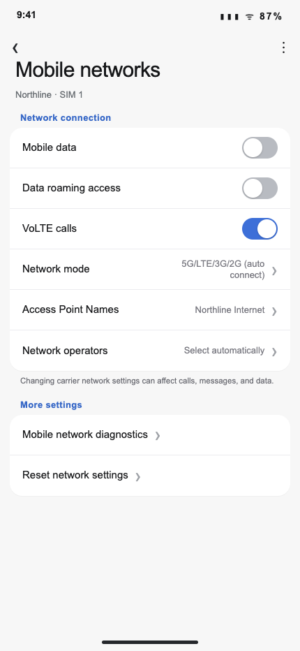
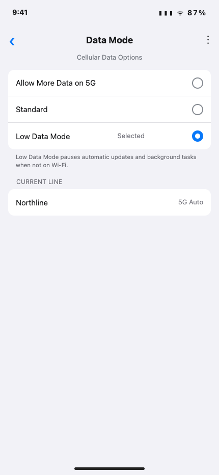
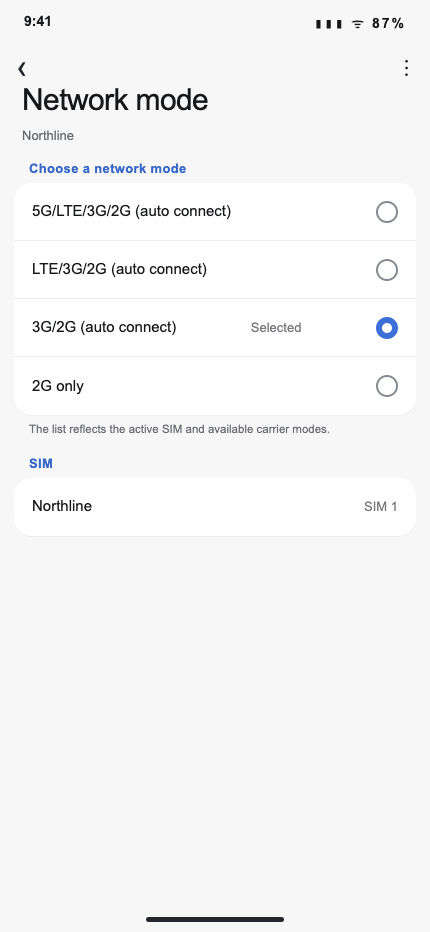
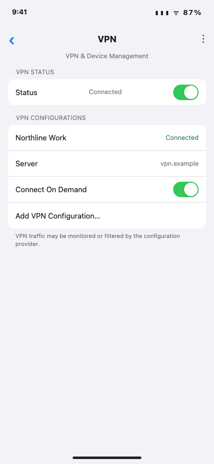

Use the illustrated paths named by a Northline troubleshooting article. The images show a current phone state; the referring article supplies the support context.
Before comparing: Select each image to enlarge it. Small previews help identify the correct screen but are not reliable for reading a selected value.
Find the cellular-data control
- Open Settings › Network & internet › SIMs › Northline.
- Compare the control position, then select it once if a change is needed. Return to the speed test. If no result loads, return to NW-DATA-2101 for the account-side checkpoint.
Menu names vary. Use the visible state in the full image, not a filename or thumbnail color, as the comparison point.

Find Data Saver or Low Data Mode
- Open Settings › Cellular › Cellular Data Options › Data Mode.
- Use this section only for a slow-data complaint. Read the selected mode in the enlarged image before deciding whether the mode should change, then rerun the speed test.
Menu names vary. Use the visible state in the full image, not a filename or thumbnail color, as the comparison point.

Find preferred network type
- Open Settings › Network & internet › SIMs › Preferred network type.
- Read the selected radio option in the enlarged image. When the selected mode is limited to an older generation, choose the preferred automatic 4G/5G option and rerun the speed test.
Menu names vary. Use the visible state in the full image, not a filename or thumbnail color, as the comparison point.

Find VPN status
- Open Settings › General › VPN & Device Management › VPN.
- If performance is poor, compare the status shown in the enlarged image. Disconnect an active VPN for the test, then rerun the speed test.
Menu names vary. Use the visible state in the full image, not a filename or thumbnail color, as the comparison point.

Scope: Unlinked screens in a device archive are reference material only. They do not establish another instruction, threshold, or handoff.